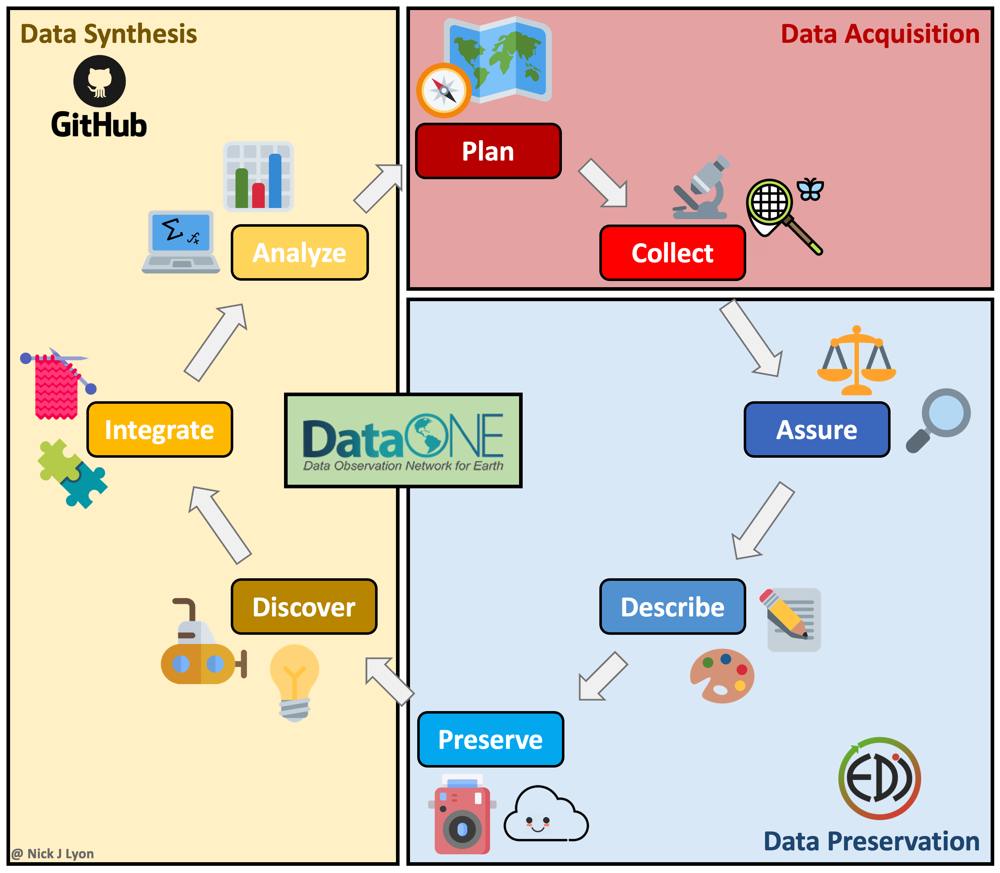
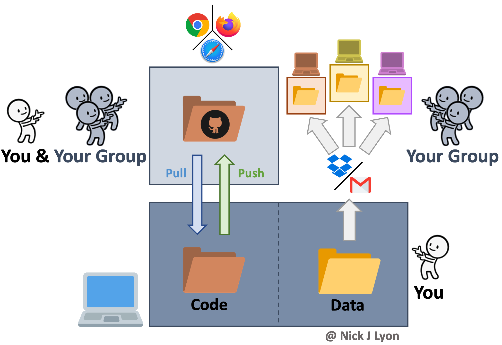
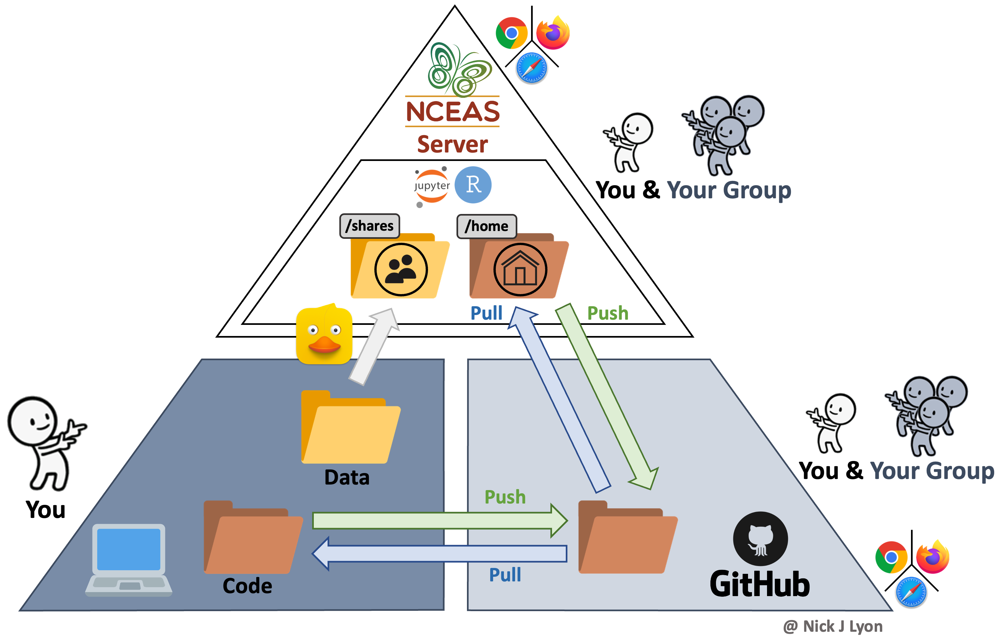

Workflows
Workflow Options

If you are working on any file that is the product of iterative edits, you have had to develop a workflow to approach that task. This could be a scientific paper, analytic code, or a presentation. There are many possible ways you could approach this task leveraging any number of software and hardware options but before we get into our discussion today about collaborative research using GitHub we would like to–briefly–outline some of the typical forms these workflows can take and how they fit into a broader framework of individual and synthesis science.
Individual Workflow
At its simplest, you could be storing your data and code on your local machine and doing the entirety of your work alone. When working on your code you would iteratively edit and save the same code file and you would have a static folder (or folders) for data that you added to as you collected and entered or downloaded additional data.
There are variants of this where you may be archiving everything on your hard drive (e.g., Time Machine on Mac OS, etc.) and you may be using a “save as” feature to preserve some iterations of your code. You may also perform this same operation within a cloud-based storage system (e.g., Box, Dropbox, Google Drive, etc.) so that some versions of both code and data are preserved based on time stamps.
This approach has the advantage of relatively few moving parts but such editing of your code loses all previous versions that aren’t explicitly preserved (as well as a record of the changes).
Another limitation of this approach is that to work collaboratively, everything would need to be manually shared with your collaborator(s) which introduces a significant risk that someone in the research team would accidentally use the “wrong” version of either the code or the data.

Data Lifecycle Considerations
The above approach works when doing largely individual research, but what about at other stages in the typical lifecycle of data? Said lifecycle is displayed below where data is acquired via planning and collection, data are assessed and preserved, and finally, data are synthesized and used to inform future plans.
Individual workflows performed by a small research team can be well-served by the relatively bare-bones workflow illustrated above but such projects often emphasize data acquisition and preservation over synthesis and thus are not as limited by a need for real-time collaboration on coding scripts across a team. Individual projects certainly do data synthesis, they just by their nature have to emphasize data collection at least as much as the synthetic components of research.
However, for larger teams–especially those that span disciplinary boundaries or have ongoing data collection protocols (e.g., research coordination networks, working groups, etc.)–the synthesis part of the data lifecycle often becomes progressively more important. This importance is tightly linked to a need for collaboration among team members on wrangling, analysis, and visualization scripts that in individual workflows can be managed by a single team member but cannot be in synthesis projects.
Collaboration on coding can be accomplished by manually sharing code and data among group members but there are programs and websites that are specifically dedicated to meeting the need for collaboration. One example is “version control” systems (e.g., GitHub, SVN, etc.) that provide a framework for reproducible group work.

Synthesis Workflow
Version control systems preserve the iterative changes you and your team make to code and allow for informative titles and messages to be attached to these snapshots. This offers a clear advantage over ambiguous time-stamped versions preserved by cloud storage systems as it facilitates re-visiting code long after or by new team members who were not present for the initial writing. This approach is what we will be covering in greater depth in a few moments but the broad strokes are that you would preserve the history of your work and ensure that everyone uses the “right” version of the code.
However, despite its advantages for collaborative coding, version control is not meant for preserving data so you would need to share data with your collaborators either via email or by storing data in the cloud and sharing links with team members. Depending upon how you implement either route for sharing data (email vs. cloud) your group is still at risk for group members using different versions of the data–especially if your group is involved in ongoing data collection.
Further, an inconvenience associated with this workflow is that each group member will store their copy of the data in a different network of nested folders on their local machine. This means that all references in the code to the path of the data (e.g., “home/users/me/project/data/…”) will differ, so running a collaboratively-developed piece of code would require careful specification to avoid getting a ‘this folder does not exist’ error. This is absolutely surmountable but can be a source of frustration over longer project timelines.

Synthesis Workflow on NCEAS’ Server
Finally (for our purposes), you could build NCEAS’ server into your workflow to not only collaborate with colleagues on code but also centralize your data storage!
This method has all of the coding advantages of a workflow with version control (see above) in that it still facilitates reproducibility, transparency, and collaborative work. However, it also offers a secure location for all of your data to be stored that is accessible to all members on the same folder path.
This means that even though each group member could code separately in their own ‘home’ folder on the server (and send those changes back and forth with GitHub) all code could reference the same data location in the ‘shares’ folder on the server. This guarantees not only that all team members are using the same version of the data but that they are using the same exact data file.
Data can be moved from a specific computer onto the server by using any “File Transfer Protocol” (FTP) software (or “SSH FTP” a.k.a. SFTP). These programs function very much like the file manager on your computer (e.g., Finder on Mac) and allow simple dragging-and-dropping of files between your computer and the server. NCEAS has a tutorial on how to go about setting up an FTP or SFTP program on your computer that we are also happy to go over in greater depth as needed!
Adding the server to your team’s workflow also allows you to work on code both on your folder in the server and on your personal computer as needed. This means that using the server for some of your coding needs does not mean that you are limited to solely using the server ad infinitum thereafter.
An ancillary benefit of this approach is the dramatic improvement in computational power when using the server (as compared to even a fast personal computer)

Summary
While each approach offers its own strengths and weaknesses, in our experience many scientists avoid the latter two options due to knowledge barriers about how to get set up in these programs and websites, much less how to actually navigate those systems once set up!
Today, we will strive to cover the fundamentals of using a version control system in your workflow (Option 2) and–for some groups, depending on interest–how to extend that workflow further and leverage NCEAS’ server to share data and work on code.
Please don’t hesitate to ask questions and remember that this link is a resource that you should feel free to refer back to if you ever need a refresher or wish to teach peers! There are supplementary appendices as well which we do not anticipate being able to get to today but we do think are likely to be valuable to you as your confidence with these systems grows.
Getting Started on NCEAS’ Server
Necessary Software
The only tool that you will need to get set up on NCEAS’ server is RStudio!
You likely have worked in the “Console” tab of RStudio (where run lines and outputs appear; see below) but RStudio has another tab to the right of the “Console” called “Terminal” which offers RStudio users access to the command line (a.k.a. the shell). If you are a veteran command line user you may prefer to use the standalone Terminal app on MacOS or PuTTY on Windows but for the sake of keeping your tool kit streamlined, we’ll walk through getting set up on NCEAS’ server using only RStudio’s Terminal tab.

The Terminal does not accept R syntax (and the Console doesn’t accept Terminal syntax) so you may notice that some of the code we’ll walk you through below is formatted differently than you would write an R script.

Get your Invite Ready!
After your group RSVP’d for this workshop, our team contacted NCEAS’ IT team to get you an invite email to create an account on the server. An example of what that email may look like is included below but there are two key pieces of information:
- Your username
- Your temporary password (covered by a red bar in the screenshot).
If you have not received that email, check your Spam folder for emails from Thomas Hetmank (hetmank@nceas.ucsb.edu) or Nick Outin (outin@nceas.ucsb.edu). If you have not received the email and it is not in your Spam, reach out to our team and we will work to get an invite sent to you.

Signing into the Server
In the following instructions, all words that look like this should be typed into the Terminal tab and run by pressing return or enter. Note that typing these commands into an R script or R Markdown will not work because it will attempt to run in the Console. All words that look [like this] (i.e., bracketed) should also be typed into the Terminal tab but the specific text should be replaced in a user-specific way that is clarified in the nearby text.
In the Terminal pane of RStudio, you will “ssh” into the server by running the following code:
ssh [your username]@aurora.nceas.ucsb.edu. It is @aurora because the name of the server is Aurora.If this is the first time you’ve accessed the server you will need to enter
yesto accept the server’s SSH key.You will then be prompted to enter your
[temporary password](see the above email example). Note that the cursor will not advance as you type but it is registering your entries! There will be no indication that you are typing (such as: “•••••••••”) This throws off many users so hopefully the above note helps set your mind at ease.You will then be prompted to change your “expired” password. We consider your temporary password to be expired as soon as you use it because sharing passwords via email is not secure and this “expiration” lets you set the password to something that only you know at the outset of your time in the server. Note again that the cursor will not advance as you type but it is working! To update your password, enter your
[temporary password], then[your strong new password]and finally re-type[your strong new password]to confirm it. Note that your new password should not be “your strong new password” :)You are ready to go! Run
exitto log out of the server in the Terminal tab.Now that you have set a new password, use your favorite web browser (e.g., Firefox, Chrome, etc.) to access Aurora and click “Login to RStudio Server”
In the resulting page, you can sign in with the same username and password you just signed in on the Terminal tab with.
You should now be in something that looks very much like RStudio but is housed in a tab on your browser! We will work together from here on out so once you have reached this point, let our team know and we can gather the group before continuing.
If the above steps have not resulted in successfully accessing Aurora, consult NCEAS’ instructions on first login and/or SSH-specific instructions for Mac vs. Windows and/or email us!